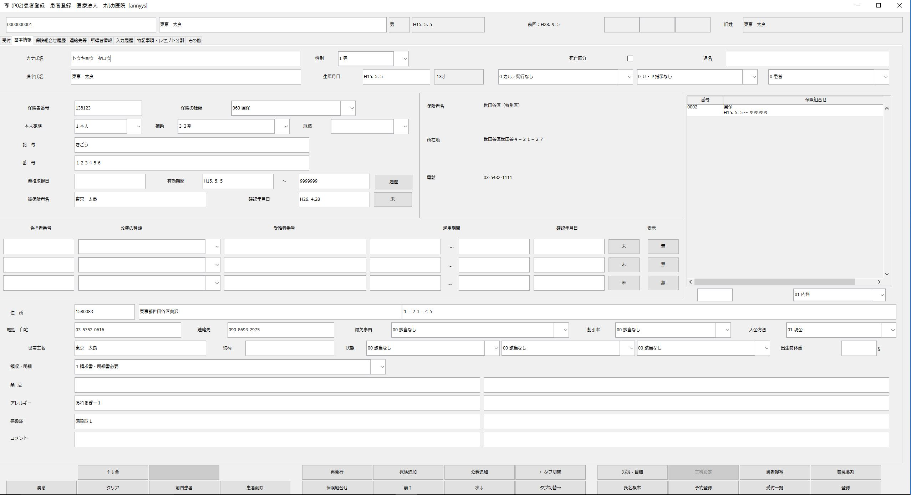
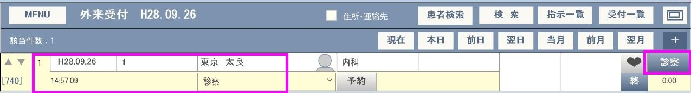
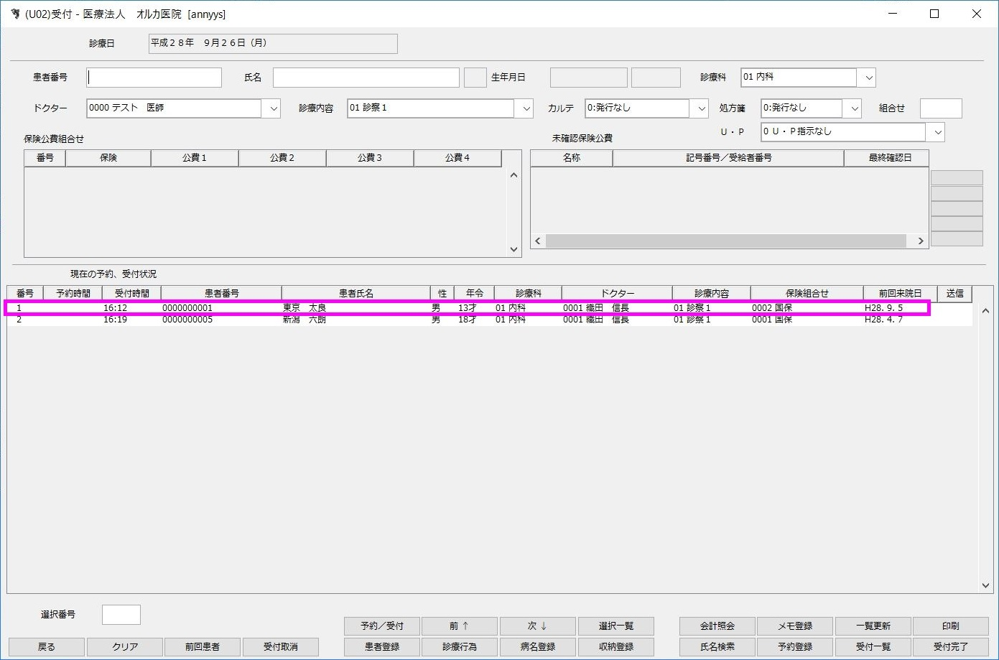
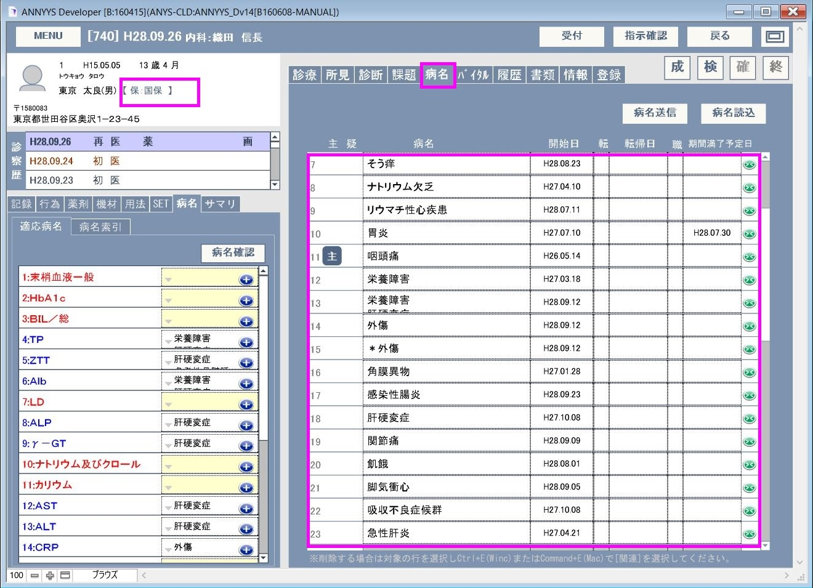
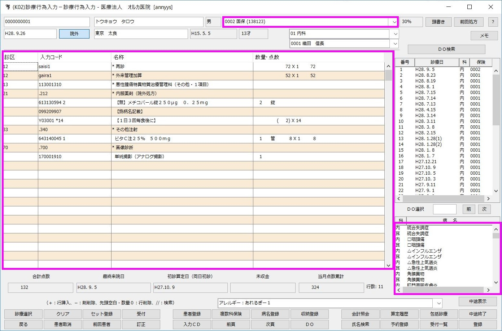
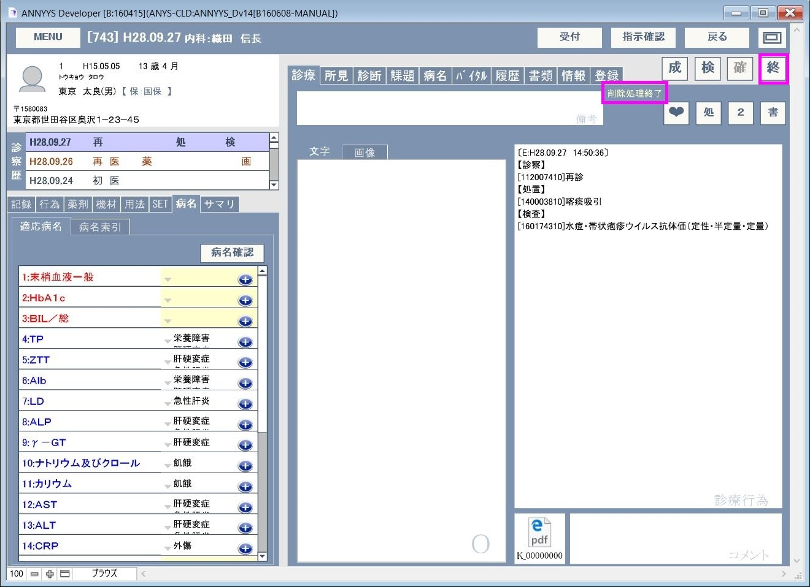
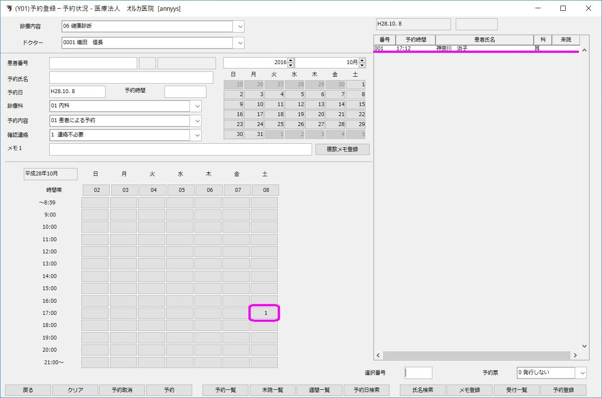

マニュアルの表現に関して
本マニュアルでは大文字の英語を組み合わせた記号表現があります。この意味以下のようになりますので、ご理解の上お読みいただけますようお願い申し上げます。
| 記号 | 読み方 | 説明 |
|---|---|---|
| L(エル) | レイアウト | 表示されている画面の名称 |
| B(ビー) | ボタン | 画面上のボタン |
| F(エフ) | フィールド | 画面上の入力スペースのこと |
| T(タブ) | タブ | 画面上のタブスペースのタイトル |
| S(エス) | スクリプト | スクリプトメニューにあるスクリプト名 |
例１）L[メインメニュー] B[外来受付]
メインメニュー画面の、外来受付ボタン（を押す）となります。
例２）L[診療記録] T[病名] F[病名]
診療記録画面の、病名タブの、病名入力スペースとなります。
電子カルテはレセコンと連動する事で、院内の業務の効率化を図ることができます。 ANNYYS_D版は日医標準レセプトソフト Ver.4.5.0以降に対応しており、glserverのHTTPプロトコル通信によって以下の連携を可能にしています。
注意点： 日レセと連携する場合、医師名、診療科、来院目的の３つのコード番号は日レセ側の内容に統一しておいてください。 ※医師名コードは頭に１をつけた内容でANNYYSに登録します。 例：0001：山田太郎 => 10001：山田太郎
※本内容に一部日レセ上での会計情報の削除方法などを掲載しています。万が一実データの消失した場合などのトラブルに対して対応はできませんのであらかじめご了承ください。実際に操作する場合はサポートベンダー等のサポートの上で、慎重に行うようにしてください。
| ANNYYS_D | 方向 タイミング | 日レセ |
| 患者情報（保険・公費） | ← L[患者情報] B[確認] | 患者情報(保険・公費) |
| 受付登録 後で会計オーダーを送信する際に当該患者の保険情報を取得することが目的である。 | → L[外来受付] B[診察] L[受付一覧] B[診] ※診察記録画面を開いた時 | 受付情報 日レセで受付しても問題ありません。 |
| 診療行為情報 病名も一緒に送信されます。 | → L[診察画面] B[終] | 診療行為情報日レセのみで会計も可。 |
| 予約情報 | → L[外来受付] B[予約]確定時 | 予約情報 日レセで予約しても問題ありません。 |
ANNYYS_Dと日レセの連携に関する情報の関係はこのようになっています。
登録に関する業務（患者情報や保険・公費などの登録）は日レセ側で行うようにしてください。
ANNYYS_DではL[患者情報]#B[確認]で、日レセから最新の情報を受け取る事ができます。
会計オーダーでは先んじて該当患者の最新の保険情報を受け取る必要があるためL[外来受付] B[診察]またはL[受付一覧/指示一覧] B[診]で診察画面を表示した際に受付リクエストを送信していて日レセに該当患者の受付処理が行われます。この時、該当患者の保険(組合せ)情報が戻ってきていますのでANNYYS_Dではこの保険(組合せ)情報を取得しています。もしこの時日レセ側で既に受付されている場合はプログラム内部の動きとして単純なエラーが返答として帰ってきますが、保険(組合せ)情報はやはり正しく返答されてきます。
最後にL[診察画面] B[終]で診療記録による会計情報が送信されますが、この時ANNYYS_Dで登録した病名なども一緒に送信されます。診療行為内容の送信は「会計オーダー」と呼んでいますが、日レセで会計オーダーを元に会計処理が行われるまではANNYYS_Dから会計オーダーを修正(削除&登録)する事ができます。 ※注意：日レセ側で会計処理が完了した後に修正情報などを送信したい場合は、まず日レセで該当の処理済み会計情報を取り消す必要があります。そのうえでANNYYS_DのS[日レセ]> S[UUID強制削除]を行い送信した内容をリセットする事ができます。
予約情報はL[外来受付] B[診察] B[予約]を押し、予約日・予約時間を設定し確定した場合に日レセに送信されます。
日レセとANNYYS_Dの情報のやりとりに関する事ですが、日レセ側だけで業務を行う事も可能です。LANによる連携では設定の変更や新しい機器の導入、さらには想定しない様々な要因で何かしらドラブルが発生し情報のやりとりができなくなったりする事があります。このような場合でも完全に業務が停止しないよう、それぞれ単独でも業務が行える準備をしておいてください。
ANNYYS_Dには登録が無く、日レセには登録済であること。

B[確認]で取込み（※既存情報は上書き更新されます。）
患者情報（名前・カナ・郵便番号・住所）
保健情報
公費情報
が読み込まれます。
L[外来受付] B[診察]で受付リクエストが日レセに送信されます。

L[診察画面]の患者情報部分に日レセから取得した患者の保険組合せ内容が表示されます。
日レセに受付登録が無い場合は受付内容が登録されます。診療科、医師、診察内容、時間など登録した内容で送信されます。

会計オーダーは L[診察画面] B[終]で受付時に取得した保険情報と登録済みの病名(T[病名])とともに送信されます。
一緒に送信される保険情報と病名

日レセでは受付リストから該当患者を選択し下の [診療行為]ボタンを押すと送信した内容が表示されます。
日レセ診療行為入力画面で、送信された診療行為・保険・病名が確認できます。

あとは日レセの仕様に従い会計処理を完了させてください。
会計オーダー送信後、日レセ側でまた会計処理をしていない場合 L[診察画面] B[終]で表示されたダイアログから[削除]を選択し一旦削除リクエストを送信します。


「削除処理完了」のメッセージが表示されたら削除完了です。 診療行為内容を修正し、再びL[診察画面] B[終]で診療行為内容を登録できます。
新しいUUIDが登録されます。
日レセ側で会計処理済みの場合は日レセで一旦会計内容を削除する必要があります。 日レセで診療行為画面を出して[Ｄｏ検索]をクリックします。
[訂正診療日]という名称に変わったら下のリストから該当日を選択します。
診療内容が展開されたら[クリア]→[登録]をクリックして削除処理を進め「継続分も含め受診履歴を削除します。
というメッセージがでるので「ＯＫ」を押し削除処理を完了させます。
ANNYYS_DではL[診察画面] B[終]で表示されたダイアログから[再送信]を選択し診療行為を送信します。
新しいUUIDが登録されます。
もし、ANNYYS_D側のUUIDを削除したい場合はS[日レセ]> S[UUID強制削除]を実行すると登録済みのUUIDが削除されます。
ANNYYS_Dでは基本設定に設定した処方（院内or院外）内容で日レセに情報が送信されます。たまに設定と違う方法で処方を処理したい場合はORCA側で処方内容を修正してください。

例）院外処方を院内処方に変更する場合
基本設定が院外なので全て院外処方で受信されています。
院外を院内に変えるには処方の２１２の部分を２１１に変更します。これで院外処方が院内処方に変更できます。 院内処方を院外処方に変えるにはこの逆の操作で行えます。 院内処方=２１１ 院外処方＝２１２ となっています。
ANNYYS_Dで登録した予約情報も日レセに送信されます。 L[外来受付] B[予約]で予約内容を登録します。ポップアップに日時・時間、診療科、などをを入力します。
予約完了のメッセージが表示されますので「OK」を押します。
送信された旨のメッセージが表示されますので「OK」を押します。
日レセでの予約登録画面で登録した予約内容が確認できます。
